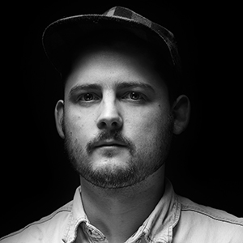
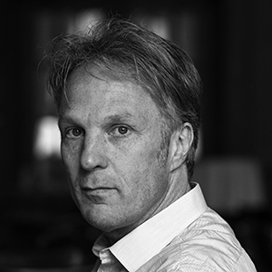
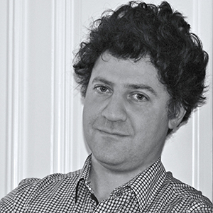
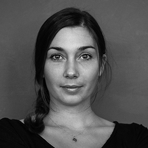
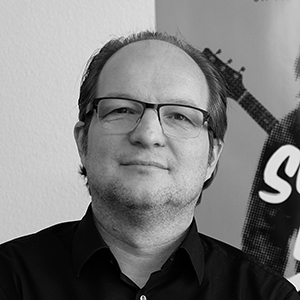
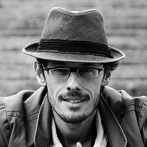
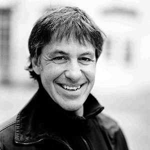

-
Anna Thommen
Shooting Star -

Gregor Brändli
Allrounder -

Vadim Jendreyko
Filmemacher & Produzent -

Reinhard Manz
Videopionier -
Hanspeter Giuliani
Filmtechniker -

Claudio Cea
der Editor -

Lena Maria Thüring
Videokünstlerin -

Pascal Trächslin
der Lobbyist -

Patrick Becker
Toningenieur -

Giacun Caduff
der Umtriebige -

Niki Reiser
Komposition -

Frank Matter
Filmemacher & Produzent
12 Schlüsselfiguren der Basler Filmszene
Wen meint man, wenn man von der Basler Filmszene spricht? Allein der Lobbyverein balimage zählt mehr als 100 Mitglieder. Wir präsentieren 12 Köpfe, die der Basler Filmszene ein Gesicht geben. Durch Klicken auf die Porträtbilder erfahren Sie mehr über die Filmschaffenden.
Wer hier Arthur Cohn erwartet, wird enttäuscht. Warum? Den Grand Old Man zählen wir nicht zur Basler Filmszene,
weil er nicht wirklich integriert zu sein scheint. Der 88-jährige Produzent hat mehrere Oscars gewonnen, noch viel
mehr Hollywood-Schauspielerinnen seinen Schmus aufgedrückt und das gerne von einer hiesigen Lokalzeitung dokumentieren
lassen. Cohn spielt in seiner eigenen Liga.
Auch nicht zur Basler Szene zählen kann man Bernhard Burgener. Er lebt zwar in der Region, orientiert sich aber mit dem Medienunternehmen Highlight Communications international, sei es mit dem Handel von Fussballrechten oder mit der Übernahme der renommierten deutschen Firma Constantin Film. Burgener gründete zwar in Pratteln die Tochterfirma Constantin Film Schweiz, um so Michael Steiners «Sennentuntschi» vor einer Bruchlandung zu retten. Doch ist es still geworden um den Schweizer Ableger.
Ebenfalls erwähnenswert wäre eigentlich Marthe Keller. Doch die Schauspielerin mit Stil
hat ihre Zelte in Basel schon
vor Jahrzehnten abgebrochen. Nach Stationen in den USA, wo sie etwa mit Dustin Hoffman in «Marathon Man» spielte,
lebt sie heute in Paris.
Wir widmen dem Filmplatz Basel und seiner Förderung eine Reihe, die Sie im Dossier oder unter den folgenden Links finden:
- Cutten Sie den Brain Drain der Basler Filmszene, werte Grossräte!
- Warum die Basler Filmszene mehr Gelder will
- Reden wir übers Geld – anhand eines konkreten Film-Beispiels
- Zahlenspiel: Wie die Schweizer Regionen den Film fördern